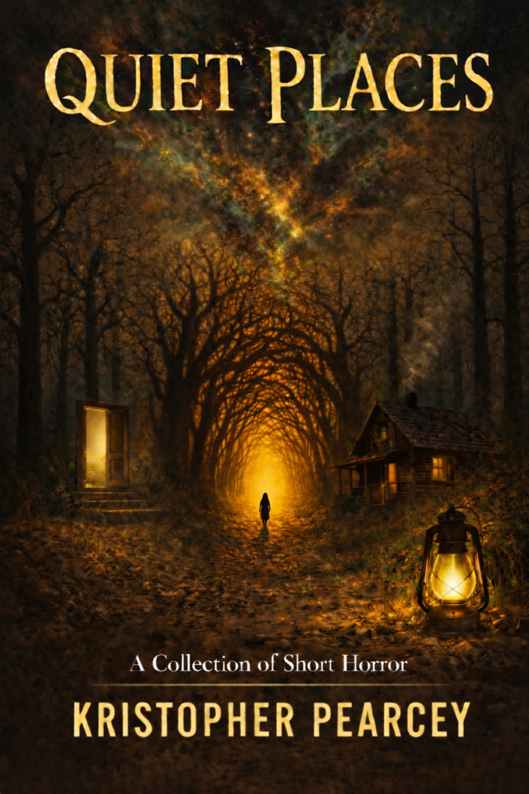
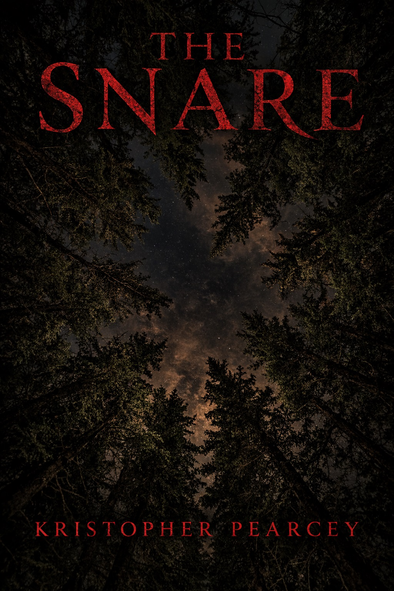
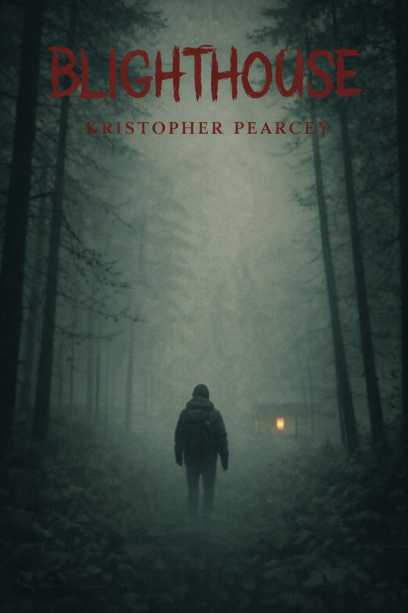
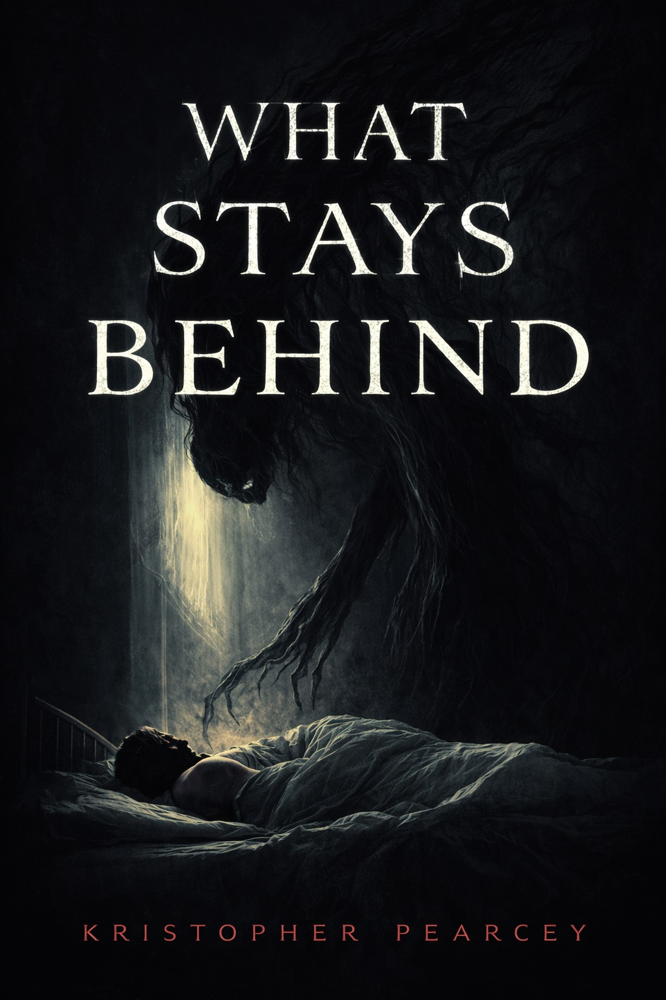
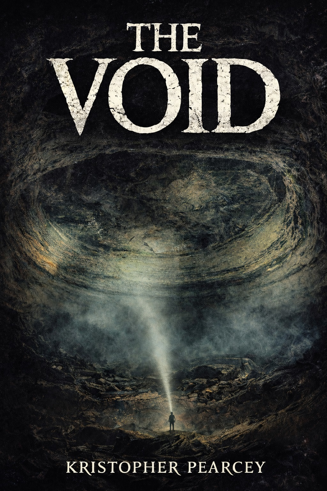

Featured collection
Quiet Places
A collection of short horror stories drawn from isolation, dread, and creeping unease — where what once felt familiar slowly becomes the thing to fear.
Cosmic horror and contemporary weird fiction.
"Kristopher writes slow, atmospheric horror that works its way under your skin. He proves the most frightening things are the ones you never see clearly." "Pearcey builds atmosphere the way fog moves — slowly, quietly, until you realise you can't see where you came from."
From the collection
November 2025
Mayfly Season
Deep in the barrens, an unnatural hatch gathers over a creek that should not exist.

January 2025
The Snare
Some things in the forest are not meant to be left unfinished, and the woods do not easily forget.

April 2023
Blighthouse
A hiker takes refuge in a cabin where the rot seems to run deeper than the wood itself.

June 2024
What Stays Behind
A graduate student retreats to her late grandfather's remote cabin to finish her thesis and finds that she isn't alone.

March 2026
The Void
There are places beneath the earth that have waited in perfect darkness since before anything walked above them.
Browse all stories ⟶
Enter the Archive
More stories await, take a step further into the dark.